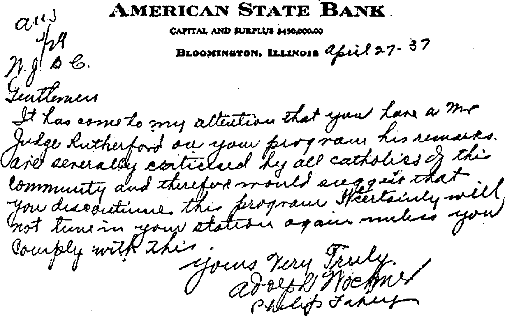
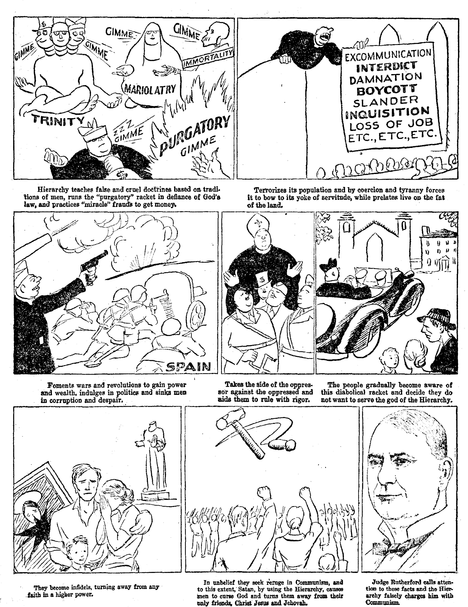
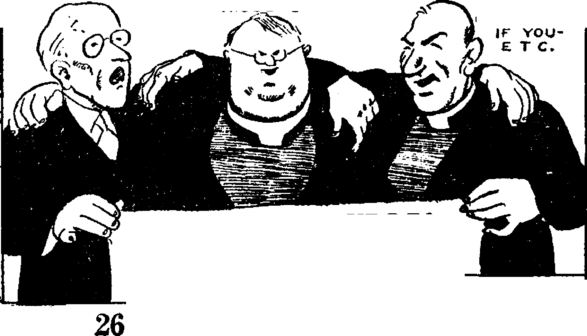
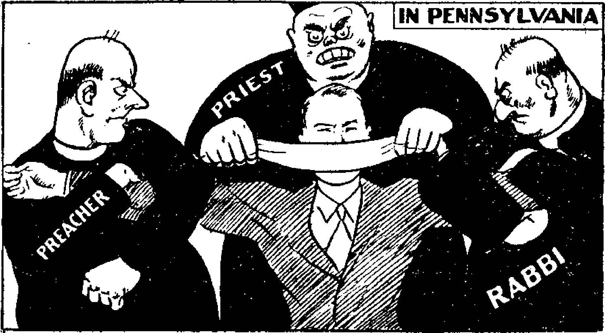

Contents
Judge Rutherford’s Latest Book---
By Trail and Stream and Garden Path
Published every other Wednesday by THE GOLDEN AGE PUBLISHING COMPANY, INC. 117 Adams St., Brooklyn, N. Y., U. S. A. President Clayton J. Woodworth
Vice-President Nathan H. Knorr
Secretary and Treasurer Charles E. Wagner
Five Cents a Copy
$1 & year In the United States $1.25 to Canada and all other countries
NOTICE TO SUBSCRIBERS
Remittances: For your own safety, remit by postal or express money order. When coin or currency Is lost in the ordinary mails, there is no redress. Remittances from countries other than those named below may be made to the Brooklyn office, but only by International postal money order.
Receipt of a new or renewal subscription will be acknowledged only when requested. Notice of Expiration is sent with the journal one month before subscription expires. Please renew promptly to avoid loss of copies. Send change of address direct to us rather than to the post office. Your request should reach us at least two weeks before the date of issue with which it is to take effect. Send your old as well as the new address. Copies will not be forwarded by the post office to your new address unless extra postage is provided by you.
Published also in Bohemian, Danish, Dutch, Finnish, French, German, Greek, Japanese, Norwegian, Polish, Spanish, Swedish.
OFFICES FOR OTHER COUNTRIES
England 34 Craven Terrace, London, W. 2
Canada 40 Irwin Avenue, Toronto 5, Ontario Australia 7 Beresford Road, Strathfield, N.S.W.
South Africa 623 Boston House, Cape,Town Entered as second-class matter at Brooklyn, N. Y, under the Act of March 3, 1879.
♦ An amusing dispatch in the Boston Globe exposes the hypocrisy, intolerance and bigotry of ex-Assistant District Attorney John Joseph Murphy, of Boston, when it says in one sentence that “Murphy pleaded for religious tolerance ’’ and in the very next one said that “ Attorney Murphy assailed Judge J. F. Rutherford of the International Bible Students’ Association, leader of Jehovah’s witnesses, as a dangerous bigot”. Accusing others of bigotry comes with fine grace from the most intolerant and bigoted class of people, and the worst cry-babies in the United States. Guess Murphy’s birthplace and guess his * ‘ church ’ \
♦ Priest Glicherie, in Kiszyniew, Bessarabia, drew a map of heaven, divided it up into allotments and sold 200 places to members of his flock before the police stepped in and discouraged the project. Ordinary places cost about two pounds, English money. Places near the angel Gabriel were more expensive. Those near God were double-price, and many poor people sold their cows to buy. Glicherie was imprisoned at Jassy. Of course, this is a perfectly legitimate extension of the ‘£ mass ’ ’ and “purgatory” swindle, and there seems no reason why the police should butt in on one swindle and let the other continue.
♦ At one of these now popular fandangoes of Jews and Catholics, held in Chapel Hill, N.C., the “Reverend Father” J. A. Greeley, Augusta, Ga., made the statement, “Today hatred rules the world and the Catholic Church bases its educational theory upon love.” That is rich. If the cartoonist can’t do something with that one, then who can?
❖ At Novara, Italy, an eagle pounced upon a sleeping cat and carried it into the Alps. Some time later hunters found the cat beside the , body of its captor. Eagle picked wrong cat.
“And in His name shall the nations hope.”—Matthew 12:21, A.R.V.
Volume XIX
Brooklyn, N. Y., Wednesday, November 3, 1937
Number 473
NY PERSON who teaches anything contrary to the words or commandments of Almighty God is a religionist and a teachei* and practicer of religion. Religion is the besetting sin of the enemies of God, visible and invisible. In his book Enemies these foes of Jehovah God and the people of Jehovah God are marshaled before the reader, one after another, and collectively identified as the wicked that seek the destruction of the true people of God.
The Devil is identified as the inventor of religion and the introducer of it to mother Eve in the garden of Eden and subsequently to all others from that time until now. Associated with the Devil in the original rebellion, which first manifested itself in the garden of Eden, and in the next fifteen hundred years filled the earth with violence, were Gog, his prime minister, and the willfully wicked angels, who have had so much to do with deceiving man and dishonoring God throughout all the centuries that have intervened, until this day.
The Devil, Gog and all these willfully wicked angels will be executed at Armageddon, because their intelligence and strength, instead of being devoted to the honor of God and the good of men, have been devoted to perpetuating the rackets in the form of religion which one after another have emerged from the mind of the great cruel inventor of religion and strife, Satan, Beelzebub, the prince of devils.
Religion had a human start in Eve, and then in Cain, who adopted a form of worship but had no faith in God. Cain’s grandson, Tubal-cain, was the progenitor of the munition makers of A.D. 1937.
Organized religion among humanity did not get under real headway until the days of Nimrod, the great-grandson of Noah, who accepted from his fellow men tributes of honor superior to those offered to God himself. Nimrod was the founder of Babylon, and all religion properly receives the name of the city which he founded. Nimrod was a leader in politics and commerce as well as in his practice of hunting and killing wild life unnecessarily.
Indeed, the hunting and killing of animals, except where necessary, is in itself a practice of religion and contrary to the commandments of Jehovah God. All munition makers, international murderers, are religionists, and “no murderer hath eternal life abiding in him”. —1 John 3:15.
The Jewish people have been beset by religion from the time they left Egypt until now. For centuries they indulged in image worship, which is idolatry. Later they settled down to following the traditions of men, thus dishonoring God and making void His Word. Under the inspiration of the Devil they invented and practiced formalism.
When Christ Jesus was on earth He was never a religionist, never indulged in formalism, never encouraged it in anybody else. Jesus preached the kingdom of God, but the religionists did not join Him in preaching that kingdom. Jesus taught the people. The clergy not only did not assist in this work, but opposed Jesus in it. Jesus helped the people to understand the Bible, but the clergy then and ever since have done all possible to keep the people from understanding and studying the Bible.
Jesus showed the people the way into God’s kingdom, but the clergy would neither enter the kingdom themselves nor allow others to do so. Jesus invited such to follow Him as were Israelites indeed, men without guile; but the clergy then and since have been full of guile and deceit and have identified themselves as the persecutors of the guileless, and hence as the goats in the parable of the sheep and goats. They even tried to prevent Jesus’ resurrection.
Their constant effort has been and is to keep the people in ignorance of the Bible and to even deny and desecrate the Bible, so that monies and its representatives wear peculiar clothing. Contrary to the Word of God, it exercises political power and instigates and supports dictatorships. Contrary to the Word of God, it uses images, crosses and other idolatrous paraphernalia. Contrary to the Word of God, it persecutes God’s true people and seeks their hurt. Contrary to the Word of God, it glorifies self. Contrary to the Word of God, it uses a harlot’s methods; it sings like a har-
they may divert to themselves the worship which should be bestowed only upon God.
The DeviVs
Masterpiece
It was not until after Jesus’ death that the Devil conceived the idea of the Roman Hierarchy. Indeed, the Hierarchy of Jurisdiction was not organized until centuries after the death of all the apostles.
* Arise against her in battle ... The battle is God Js1
lot and it seeks and accepts a harlot’s hire. Contrary to the Word of God, it compels others to believe what is untrue. It adroitly teaches Communism and then uses it as a scarecrow to drive the people into its own support, and it falsely brands Jehovah’s witnesses as Communists.
It rides the League of Nations, and as -such rider it, with the League, is the “abomination that maketh
The book Enemies makes no attack upon men, but could not be true to its mission without revealing the pope as the visible representative of the ‘ * god of this world ’ ’, the Devil.
The Devil is the originator of all rackets, but the one which has its headquarters at Vatican City must be for all time the masterpiece of Satan. Here is an institution which has dishonored God more than all other institutions put together, and yet has claimed to be the mouthpiece of God. Here is an institution which shamelessly operates the “purgatory” racket and the “remission of sins” racket in total defiance of every precept in God’s Word.
Contrary to the Word of God, it seeks and acquires worldly riches. Contrary to the Word of God, it backs up the war programs of politicians. Contrary to the Word of God, it seeks complete political control of the world. Contrary to the Word of God, it has peculiar cere-desolate”. Not only does it commit fornication with the world, but it seeks alliances with politicians and big business. It is the world’s most destructive racket. It is Jehovah God’s greatest visible enemy. It is the friend of the world and is the servant of Satan. It claims to be “the Christian religion”, but there cannot be such a thing as “the Christian religion”, because Christianity and religion are direct opposites.
As the climax of its career, shortly, it will cry “Peace and safety”, believing that it has the whole world sewed up in the conspiracy against God and against the people, which is commonly called “Fascism”. The Roman Catholic Hierarchy will be the first to be destroyed at Armageddon. It will be destroyed by the “ten kings”, for God will put it into their hearts to do so.
The Jewish clergy, by their rabbis, and the Protestant clergy have become mere auxiliaries of the Roman Catholic Hierarchy. Both are playing directly into the Hierarchy’s hands. The United States is now the battlefield for Catholic Action. It is destined to go Fascist under the Hierarchy, and Uncle Sam at this minute is disclosing himself a perfect fool as respects this harlot worshiper of images.
Now to the bright side. Christ Jesus, as the representative of Jehovah God, took over the Kingdom at His second coming, which is now an accomplished fact. The dates 606 B.C. and A.D. 1878, 1918, 1919, and 1929 find some place in the book. When Armageddon will come is not known, but Christ Jesus, Jehovah’s executioner, will be the successful warrior in that conflict.
His church, the church of God, is not a religious organization. His church, the church of God, fights only by proclaiming the truth that all of the Devil’s organization will shortly be completely destroyed, with all that appertains to it, and that as a result the earth will be made a glorious place in which to live. Just now the great multitude, turning away from the religionists, are finding refuge in God’s organization and taking their stand on God’s side in the “strange work” of which the book Enemies promises to be such an important factor..
f £ A RISE ye, and let us rise up against her
-Min battle.” “Make bright the arrows.” “Gather the shields.” “Call together the archers against Babylon.” “Camp against it round about. ” “According to all that she hath done, do unto her.”
These are the royal mandates of Almighty God to His people. They are commands to take the aggressive; to go forward to battle; to pitch in and fight. It is. not a defensive warfare, but, on the contrary, a fight in which we take the offensive; in which we do the attacking; in which we invade the enemy’s country; in which we drive at them, and beset, besiege, assault and attack the Devil’s crowd. Jehovah’s witnesses and their companions in arms, the Jonadabs, are to put on the full armor of God, helmet, breastplate, girdle, sandals, sword and shield, and smite the enemy hip and thigh. Christianity in action is not attending a tea party or a quilting bee. It is not a “kaffeeklatsch”. It is not carrying olive branches and white feathers, but it is battle and war in the interests of truth and the vindication of the name of Jehovah.
Our warfare is not with leaden bullets, cannon, machine guns, and other weapons of murder. It is with the “sword of the spirit”, the Word of God. And that is a real weapon. The gospel of the Kingdom not only brings hope and comfort to those of good will. It also puts fear into the hearts of the Satanic army. It stirs up the animosity of the religious crowd, necessitating a battle to maintain and spread this message of hope and comfort for man. The truth, however, is not only a message of consolation. It is the message of the day of vengeance. It is an exposure of the worst gang of racketeers the world has known. These religious hyenas who prey upon the people are blasphemers of God. They steal, lie, embezzle, murder, torture, and commit anything and everything in the category of wrongdoing that their master the Devil can invent. They pose as angels of light, and while so doing serve the Devil and oppress humanity. Our warfare against them consists in turning on the light, and telling the whole world the truth about this wicked, vicious, iniquitous bunch. This is aggressive warfare and a battle in which every person who loves God enjoys participation.
The religionists are not the type to permit this flood of truth to spread over the land without striking back. They are not pacifists. They do not believe in turning the other cheek. They do not advocate the manifestation of a meek and quiet spirit when the truth is being told about their misdoings. They are revengeful, and their methods are in conformity with their
disposition. They do not answer the charges against them. They accept no challenges to debate. In the words of one of their chief parasites, they ‘would not dignify the president of the Society by appearing on the platform with him in public debate’. Then they proceed to show their peculiar conception of dignity by the use of the most underhanded, crooked and debased methods of warfare the Devil and his prelates can bring to birth. Note a few of them, and thus appreciate the kind of vipers it is our privilege to expose.
Calling Names
Calling Names: The Catholic Hierarchy is an expert at that kind of job. “Bigots,” ‘ ‘ mountebanks, ” “frauds,” “ jailbirds, ’ ’ liars,” and other uncomplimentary titles applied to Jehovah’s witnesses, are worn threadbare in Catholic Action sheets. Of late the principal form of terminology is to apply the term “Communist” to all who do not conform to the Catholic mode of thought and action. The fact that Jehovah’s witnesses are far removed from Communists in purpose, philosophy and mode of life does not mean anything to the Hierarchy; The word goes forth and the epithet is applied frequently and loudly to make all people believe the lie.
Boycotts
Boycotts: This is another of their dignified methods of meeting the truths hurled at them. The radio station which broadcasts the truth । concerning Jehovah’s purposes to bless mankind receives letters, phone calls, petitions and Catholic Action editorials informing it in no uncertain terms that if it continues to tell the truth about them it will be forced out of business.
Mob Action
Mob Action: This is the apex of dignity and refinement in the school of Catholic Action. In areas where ignorance and lawlessness abound, the priests tell their parishioners and the city officials to run Jehovah’s witnesses out of town. They whip up the animosity of the crowd to a frenzy and spur them on to violence and destruction of property. Then, to top off this super-exhibition of dignity, they have the victims of mob action arrested and charged with disorderly conduct.
Judicial Aid Societies
Judicial Aid Societies: Old commercial ordinances such as peddling, canvassing, soliciting, circular and handbill ordinances, vagrancy laws, disorderly conduct laws, begging laws, and flug-salute regulations are brought forth, dusted off, and used in this dignified campaign of Catholic Action against Christian people. When these fail the Papal ‘brain trusts’ are put to work concocting new laws to stop the onward spread of truth. Gag laws throttling freedom of speech and freedom of worship are going through the legislative mills in various parts of the country. Laws prohibiting calling on anyone without a prior invitation are the latest models hatched and designed to stop the “strange work” of Almighty God. It won’t be long before you will be in jeopardy if you say “Hello” to your neighbor across the backyard fence. And the young swain who calls on his loved one at her home without previously being authorized by herself, her family, the village priest, and the police department, is apt to find himself enjoying a vacation in a room with iron bars, an iron door, iron walls, and an iron bed.
This is all part of the Fascist program of the Roman Catholic Hierarchy as it reaches out its deadly tentacles to gather all things under its control. It would drive the name of Jehovah from the face of the earth if possible. It is our privilege as ambassadors of the Most High to lift high the banner of truth, expose this hideous conspiracy to everybody, and tell the whole world the purposes of our Creator to clean out the whole filthy mess and bring the blessings of liberty, freedom, justice, peace, health and prosperity to all.
What better job could we have ? What more useful occupation could there be than that of being witnesses for Jehovah in this time of battle ? Great is the honor and privilege given to the Lord’s saints in this our Lord’s day.
It can readily be seen that this is no time for sissy saints. We used to believe in character development. We thought it necessary to smile and take it sweetly no matter what happened. Whether we were thrown into jail, attacked by a mob, reviled, or what not, we deemed it the part of a good Christian to express our thanks and crawl out without any comebacks. To be walked on and tramped on, and be happy in your persecution, without striking back in any way, was considered the ideal mode of Christian action. Such might be all right in some cases in personal matters, but not while going forth as one of the soldiers of the King of kings, Christ Jesus. ‘ Arise ye: let us rise up against her in battle. ’ That’s our slogan. iAccording to all that she hath done unto you, do unto her, ’ is the divine command. The warfare isn’t against you. It is against Jehovah God and His Son Christ Jesus. It is against the truth of Almighty God, and it is against all of God’s people. Therefore it is our privilege and duty to fight back, using the weapons the Lord has provided, and give her all that she has coming. Not with fists, knives, guns, and pistols, but with the sharpcutting truth placed in our hands in proper form by the Lord through His organization. Not foolishly, bullheadedly, and rashly, but with discretion, and the spirit of a sound mind, in the manner God directs.
Paul said, ‘ * So fight I, not as one that beat-eth the air.” Paul fought with discretion and wisdom. He knew when and how to fight. His example is well worth following by the soldiers of the Lord today; for one of the hardest thiAgs some of the brethren now have to learn is to fight with discretion, wisdom and reason.
From the standpoint of combativeness we might divide the Lord’s people into three classes, to wit: First: The timid, fearful type, whose natural tendency is to refrain from anything in the form of controversy. Second: The scrappy, up-and-at-’em fighters, who enjoy a battle and, if one isn’t in sight, will go out and hunt for it. Third: The sensible, courageous type, who is not looking for trouble, but, when it comes, will meet it without shrinking, and stay by his duty, no matter what the outcome.
The timid, fearful type are inclined to hold back when a controversial issue arises. They have to be supported and encouraged to make the break into the witness work. They are apt to run for cover at the sight of a blueeoat, and ready to retire from the field when a peddlers’ ordinance is passed. They need encouragement and support, so that when the issue becomes acute they, with the strength of the Lord, will stand firmly and refuse to compromise with the enemy.
The up-and-at-’em type need restraining. They are pugnacious as a sea admiral. They ■I have their chins out at all times ready for battle. When an officer appears, they are inclined to ‘sass him a plenty’. They are inclined to tell judges where to get off, and when placed in charge of sound cars they are pests of the first water. They need to know that—
‘ for’ everything there is a season, and a time for eveiy purpose under heaven. ... a time to keep silence, and a time to speak; ... a time for war, and a time for peace.’—Ecclesiastes 3:1, 7, 8.
They need to keep in mind that our job is primarily to give the witness; to place the mark on those who sigh and cry for the abominations done in “Christendom”. It is not to stir up antagonisms and unnecessary controversies.
The actions and reactions of these three types of warriors can be best illustrated in connection with the enactment of ordinances affecting our work. Of late there has been quite an epidemic of adoption of ordinances limiting the right of the people to visit others at their homes. Many of them are aimed specifically at Jehovah’s witnesses. Many others F
are passed at the behest of associations of commerce, and, while not passed with the primary purpose of interfering with the proclamation of the gospel, may well be used for that purpose when the Hierarchy so desires.
The timid soul who observes his town council passing such ordinance gets into a flutter. He imagines it is aimed directly at him; has visions of the interior of the local jail; and immediately writes into headquarters: ‘What shall I do?’ The battling type sees such goings-on and bristles up for war immediately. He is quite apt to march down to the city hall and inform the mayor, city clerk, aiderman, chief of police, and anyone else he can think of, that he knows that they have passed the ordinance just to stop Jehovah’s witnesses; that they cannot do it; and that the Lord will bring untold calamities upon them if they persist in the unholy activity. But the commonsense type, on observing such, reasons to himself: ‘That may be aimed at us; and it may not. It may be backed by the Hierarchy, or may be merely an attempt by the merchants to protect themselves against peddlers. No matter what the purpose, my duty is to continue steadily with the proclamation of the gospel regardless of the passage of this law. If they proceed against me and charge me with violation of it, I will meet the issue when it comes. Until then, “sufficient unto the day is the evil thereof.” ’
It’s not to your credit or discredit, the fact that you may belong to one of these types. The thing to do is to examine yourself and know your limitations. Know whether you need to bolster up your courage or restrain your rashness. Do this with the idea of making yourself a better and more efficient soldier in the service of the King, and undoubtedly you will meet with the Lord’s approval.
In 1922 the Lord’s spirit was poured out upon His people and they were sent forth to proclaim the message of comfort and hope for mankind, and the day of vengeance of our God. They went at the task with a will, and books by the millions were soon being left in every nook and comer of the land. The religious racketeers squirmed and sweated under the torture, and in time broke out with violent opposition. This opposition has been manifested in many states of this country, but has centralized largely in New Jersey, Pennsylvania and Georgia. Strong-arm squads and crooked judges have done their best to stop tlje flood of waters of truth and have imposed most vicious punishment on the individual publishers. Jails have been filled from arrests made in mass lots, and sentences outrageous for their severity have been imposed. And with these have gone tortures resembling the inquisition of years gone by.
The Lord’s people have not submitted in silence. They have risen up against her in battle and have come back with a wallop and a punch that has caused many a papistical community to fold up its weapons and cry ‘Enough’. We have given publicity to the inquisitional things done in secret; appealed to the higher courts; refused to pay fines; put on special campaigns; and utilized all reasonable means to keep the witness work going. We have learned much as the war has progressed, and, from experience in the frontline areas, can offer seasoned advice and counsel to those just getting in where the fighting is hot.
A definite line of procedure should be followed when serious opposition arises. You have several purposes in view, to wit:
1. Keep the witnessing work going and prevent its suppression.
2. Give a witness to the prosecuting officials.
3. Expose the unlawful and wicked acts of those opposed to Jehovah God and His kingdom.
4. Give all concerned the opportunity to declare themselves either for or against Jehovah: to either put on the garments of Baal or identify themselves with the Lord’s organization.
Let us make this procedure definite and certain. We will take the town of X as an illustration. A local company of Jehovah’s witnesses gives constant testimony to the inhabitants. The pressure gets strong in Hierarchy circles and the local priests finally complain to the chief of police that Jehovah’s witnesses are disturbing the flock and that something should be done about it. The chief very obligingly sends out his officers, and a group of Jehovah’s witnesses are rounded up and brought into police headquarters.
Let us follow the proceedings in this town from here on with the idea in mind of knowing definitely what to do under similar circumstances.
Decorum in Arrest
Right at the inception of the proceedings you are met with a problem which has not been faced successfully by many an experienced Jw. Usually the first question asked by the officer is: “Have you got a permit? *’ That shouldn’t be hard to answer, but many of the brethren have made it complicated and difficult. The tendency is to evade by saying something that does not answer the question. You do not have a permit; so why not say, “No, Officer, I do not have any permit from the city, if that is what you mean.9 9 When you say, “Permit for what?” or, “I do not need a permit,’9 or, “I am not engaged in commercial work,” you are not answering the question. You are evading it in a manner which causes a swift rise of temperature in the officer’s circulatory system and which doesn’t help matters at all. There is no secret about our position relative to the permit; so answer promptly, politely and plainly that you do not have the permit he inquires about. Then offer your card, stating: ‘This explains all about the work in which I am engaged.’
J r
In Court
The defendant is then taken before the judge, or the desk sergeant at the police station. Frequently attempts are made to rush through an immediate trial. The defendant is quizzed and then suddenly informed that he is ‘found guilty’, and fined a specific amount. That is the first realization he has that he is undergoing a trial. Be prepared beforehand. Do not let them rush you through a trial. Ask for a continuance of a couple of weeks (in accordance with the instructions of the Order of Trial). Secure copies of the ordinance and of the complaint and send them to headquarters. You can’t imagine how much we love those brethren who, on reporting a case of interference, send with the report full and complete details, to wit: statement of facts, copy of the ordinance, and copy of the complaint.
Having secured an adjournment, you will receive advice and counsel for your trial from headquarters, and when the matter comes up for trial you will be fully prepared. In some states the procedure is simple and no attorney is needed for trial before magistrates. When in court Jehovah’s witnesses will act with decorum; they will not ‘sass’ the judge; they will rise when court officials so order; they will raise no fuss over taking the oath, and will be accommodating in everything except that which concerns the law of their God.
In the lower courts the judges, police officers and prosecutors all work as one machine, so Jehovah’s witnesses are not surprised when a finding of “guilty” is made without any evidence to support it. They would be more surprised if ‘found innocent’.
On being ‘found guilty’ the question arises: Shall we pay the fine? Some of the brethren have not yet learned the answer to this question, in spite of the constant admonition thereon in the Order of Trial. Payment of fines is exceedingly poor policy, because of the comfort, consolation and encouragement it gives to the enemy. We illustrate: Here is a town that fines a dozen of Jehovah’s witnesses $100 each. Payment of these fines would bring in the nice little sum of $1200 to the city treasury; and the racketeers would thereby be encouraged to go forth and arrest many more of the Lord’s people at every opportunity. But, on the contrary, if payment is refused, the municipality has the burden of paying board for the dozen Christians in the county jail, for a period of thirty days or so, or 360 days for the bunch. That is a flower of another color. In place of enriching the public treasury, the inquisition is costing it much good money. The persistent and constant refusal of the Lord’s people in New Jersey to pay fines has been one of the factors largely responsible for cooling the ardor of the authorities in many places towards the conduct of the inquisition.
Appeal
Whether an appeal should be taken from the judgment of conviction depends on the circumstances. In a community where the opposition is new, it is usually best to appeal convictions. Where there has been constant and repeated opposition it is sometimes best to let the convictions stand and permit the community to pay the expenses of imprisonment for the specified time.
Publicity
It is very seldom that one of the Lord’s people is convicted of violation of a local ordinance without there being a gross mi&-carriage of justice. In practically all cases there are farcical trials; a denial of equal protection of the law; a denial of due process of law; prejudicial factors inserted in the record; frantic attempts to make it look like a genuine judicial proceeding; convictions without evidence or law to support them, and innumerable evidences of malice and prejudice on the part of the court and prosecuting officials. The Hierarchy priests and racketeers keep in the background, out of sight as far as possible, and all concerned diligently try to keep the public from knowing the dirty work that is being carried on. Then comes the opportunity for Jehovah’s witnesses to rise up in battle against them by turning on the light and exposing the entire matter. Then is the time to go back to the community with the facts concerning the inquisition, either in the shape of a specially printed statement giving the details or with a special number of Consolation, or a radio broadcast bringing all the illegal and malicious acts out into the open. ‘Darkness hateth the light, and cometh not to the light, lest its evil deeds/be reproved/ When the Lord’s people go to the community and present to the people the evidence that their officials are trampling upon the laws in order to carry on religious persecution against Christian people, it has a powerful effect in educating said officials on the virtues of law and order.
Phonograph Campaigns
Most of the ordinances used to suppress the carrying of the truth to the people are peddling ordinances and ordinances governing the distribution of handbills, pamphlets, circulars, and other papers. The Lord has now graciously provided His people with a new means of witnessing in this His day • to wit, the phonograph. That is available for the next step in overcoming the opposition. Special campaigns are arranged where a carload or so of publishers per day goes into the community armed only with phonographs and records. They call on the people and give them the opportunity to hear the message the record way. As the campaign proceeds it often happens that the strong-arm squad sallies forth to make arrests and then finds, after the arrests are made, that it is faced with the problem of charging people with distribution of literature when they had with them no literature whatsoever. On these special campaigns, when the householder invites the witness to return at a later date to present more lectures, on such return trip it is well to go fully equipped with literature. You are then calling in response to an invitation and no bluecoat has the right to interfere. Thus the door for witnessing is kept open, and the people of good will are given opportunity to know the truth.
Petition Circulation
Another follow-up is a petition circulated amongst the people, which said petition protests against the unlawful acts of the officials, sets forth the belief of the petitioners in the supremacy of God’s law, and asks the law-making body of the community to amend its ordinance to the extent of exempting those from its operations who go from house to house for the purpose of presenting the message of Almighty God to the people, whether in printed form or orally. This gives all the people an opportunity to declare themselves either for or against Jehovah God and His kingdom. It gives them an opportunity to put on the garments of Baal or be marked in the forehead as being amongst those out of harmony with the sins of “Christendom”.
The petition is then presented to the law-making body of the municipality and that august organization also has the opportunity to declare itself either on the side of Jehovah or against Him. The circulation and presentation of such petitions strikingly demonstrates the lack of sincerity and honesty of those conducting the prosecution of Jehovah’s witnesses. Their claim has been: This is our ordinance and we are obligated to enforce it. The law should be enforced because it gives identification to the authorities of all those who call from house to house. We have gone to city after city with these petitions; secured thousands of signers; offered to identify ourselves in every way, even to the extent of submitting our photographs and fingerprints to the officials; and politely requested the officials to exempt Christian people from the securing of a permit to preach the gospel. These cities have been unanimous in turning down the proposal, and thereby have indisputably and unmistakenly identified themselves as willing persecutors of the Lord’s people. They have thus shown that their prosecutions are not conducted in good faith, but, on the contrary, that they are ready and willing participants in a willful and malicious persecution of Christian people.
Injunction and Damage Suits
In some cases where the opposition is exceedingly vicious and lawless you can rise up against them by going to the courts and asking an injunction against the officials. An injunction is a writ issued by a court restraining and prohibiting officials from committing certain specified acts. This remedy has not been used much, but, in cases where the facts warrant it, it is proper and helpful. Also, when officials and individuals make arrests without just cause, suits for damage can and should be instituted against them to inculcate in their minds some respect for law and order and a respect for the rights of the Lord’s people.
We do not claim that every case warrants the use of all these various steps, to wit: circularization of special printed expose, radio drama, phonograph campaign, petition campaign, presentations of petitions, etc.; but they afford a general outline of procedure, and are very effective in keeping the way open for preaching of the gospel from house to house. There are facts and circumstances that demand changes therefrom in specific cases, and the outline is here set forth for suggestive purposes. It is not an iron-clad rule to follow at all times.
Constant and persistent effort, coming back after every assault, using the sagacity and wisdom given to us by the Lord, and keeping everlastingly at it, is the best medicine against the enemy, and the right modus operandi for rising up against it in battle. It cools their ardor and causes them to consider before rashly rushing in. This is illustrated by what happened in Allendale, New Jersey, not long ago. The Bergen Evening Record tells the story as follows;
Allendale Babs Encounter with Religious Sect
Allows Canvass to Evade Court Battle over Permit Refusal attorney warns
Allendale will allow a group of religious workers to canvass the town, but only because of the knowledge that they probably couldn’t stop them if they wanted to.
The request from the Watch Tower group of Paterson last night in a letter to the Borough Council was for permission to use their sound car in Allendale on Oct. 16,17, or 18.
“They’re the Jehovah’s witnesses,” declared Councilman William Spiegelberger, “We don’t want ’em.”
“Don’t touch it,” warned John Christien, Borough attorney. “Ordinance or no ordinance they’ll take you into every court in the state and probably win out.” He cited experiences in Bergenfield and other towns where local ordinances prohibiting them were overruled by the courts.
It was agreed on motion to permit them to appear for one day.
Sound-Car Work
The sound car is one of the many effective instruments provided by the Lord for the proper execution of the witness in this the Lord’s day. Those who use it most can well testify as to its usefulness in opening the way for publishers, breaking down prejudice, and creating interest in the message. It is also one instrument that has to be handled with care. Mishandled, it becomes a detriment and a hindrance to the work.
Let us keep in mind the distinction between the regular house-to-house witnessing work and that of the sound car. To call upon a person and offer him an opportunity to hear the gospel can by no stretch of the imagination be said to interfere with his freedom in any way. Therefore the right to visit people at their homes with the message is an inherent right, which is guaranteed by Federal and state constitutions. The use of sound equipment is different. When you park a sound car on the street and start broadcasting you are to a certain extent infringing on the right of the people to peace and quietness. Some municipalities protect that right by enactment of ordinances prohibiting or regulating the use of sound equipment. Such prohibition or regulation is proper and in accordance with law. Officers of the law have the right to control sound equipment in the streets to a certain extent, even without special ordinances. Those are things which belong to “Caesar”, and therefore as good Christians we * render to Caesar what belongs to it\ If Caesar requires a permit, we secure the permit. If Caesar says ‘no broadcasting on Sunday’, we go elsewhere on that day. If Caesar says ‘no broadcasting in town at all’, we remain silent in the community.
I-
But—there is an exception to this submission to Caesar. In communities where the priests have embittered the people against the truth, and have poisoned the minds of the officials against us, very often there will be an unfair discrimination. Religious outfits and commercial concerns will be permitted to broadcast as they see fit, but Jehovah’s witnesses will be suppressed. Such procedure constitutes a denial of equal protection of the law, which protection is guaranteed under the Federal constitution. Therefore, when such tactics are used, it is timely and in order to rise up against them and test the matter. An unfair discrimination invalidates whatever law or ordinance is thus misapplied, and opens the door to an adjustment through the courts.
There are two methods that may be used. The brethren may serve notice on the officials that their actions are unfair and unlawful and have resulted in invalidating the ordinance, and therefore that you intend to hold your meetings or use your sound equipment regardless of their ordinance, and that if said officials interfere with such meetings the matter will be argued out in the courts. Go ahead then and hold the meeting. You will probably be arrested and with the aid of counsel can present the unfair discrimination to the court and maybe secure a righteous decision.
Or you may avoid the inconvenience of being arrested by securing counsel and bringing an action in the proper court to secure an injunction against the officials to restrain them from interfering with your lawful work. In following either course of procedure you should have the groundwork well prepared beforehand. You should have made due application for the permit, and then secured the evidence that others were given permits and allowed to operate, thus creating an unfair discrimination.
Good Judgment in Sound-Car Operation
If there is any place where good judgment and common sense is needed, it is in the operation of sound equipment. It is no place for the rough-and-ready battler who wants to rush into scraps, battles and controversies at the slightest provocation. Careful brethren of sound judgment are the ones needed. In many companies, maybe in most of them, are brethren who are anxious to take out the sound equipment in the strongly religious Catholic territories and put on the hottest lectures, for the purpose of stirring them up and starting a scrap. They even claim the company servants to be lacking in courage when they prohibit the use of sound cars for such purposes. Jesus showed His disapproval of the reckless tactics when He reproved Peter for slicing off an ear of the high priest’s servant. The reckless boys with desires to antagonize people far and near are likewise impulsive, and lacking in good common sense.
From knowledge culled from capable brethren with many years ’ experience in sound-car work we present the following suggestions as to the use of the recorded lectures. They might be divided into four classes, to wit: Introductory, Doctrinal, Controversial, and Hot numbers.
Samples of the Introductory type are: “Peace Messengers,” “Value of Knowledge,” “Riches,” etc. They are the type to use for street work, especially with publishers working in connection with the sound car. They cause no offense, and make a favorable introduction to the accompanying field worker.
Doctrinal numbers, such as “Soul”, “Where Are the Dead?” “Thief in Heaven,” “Jehovah,” etc., are excellent for use in parks, streets, public assemblies, etc., where numbers are congregated and will listen through.
Controversial numbers, such as “Flag Saluting”, “God’s Banner,” “Loyalty,” etc.,
are for use where the issue is a live one. Where children have been expelled from schools in a community, that is a good place to cover with such message. It may arouse some antagonism, but at such times the people should have the information as there furnished.
The so-called “hot” numbers have their place, but it is not in the every-day use of
F
sound equipment. These are “Fathers”, “Keys,” “Purgatory,” “Holy,” etc. Many brethren have an almost insane desire to hit into the strongest-populated Catholic centers and force these lectures upon them. That isn’t using the spirit of a sound mind. It stirs up the mob spirit, resulting often in serious damage and injury. Use the “hot” numbers when the times are mellow and propitious. When you have presented a number of lectures and have a number in the audience who return repeatedly, give them the facts on the “purgatory” graft, and the “remission of sins” racket. In a Pennsylvania town an operator set up his equipment and collected an audience to hear his lectures. A “holy father” ran over and told him to shut it off. He refused. “Father” stormed and threatened, but the crowd laughed at him and he went off defeated. Then the brother put on the lecture “Fathers”. That was a good place for such witness. If you want to inform the friends of the “harlot” about her misdeeds, avoid the poorer sections. That is where mob action starts, and that is difficult to handle, ■l
Mob Action
You can’t reason with a mob. There isn’t much use in trying to keep a lecture going in opposition to it. The best method is to appeal to constituted authority to handle it. Take the following steps, or such portions of them as may be necessary:
First: Call on the authorities to enforce the law. Call on the police, the sheriff, the state police, or any other officials. If local officials will not act, go for those higher up, even to the governor of the state if necessary.
Second: Secure warrants for the arrest of the mob participants; and if any priest puts in appearance on the scene, or if you have NOVEMBER 3, 1937
evidence that he instigated it, be sure to have him included in those to be summoned to court.
Third: The courts are open to civil suits for damages. Bring actions against those you know participated in damaging you or your property. In some states the law makes the municipality or the county liable for damage done by mobs; and in such cases go after those bodies. The idea is not to collect money, although that is useful, but to insist that the officials of the community enforce the law against those who would prevent the truth from being brought to the people.
Flag-Saluting and Allegiance
During the past two years there has been much ado because children have refused to salute the flag. A great furore was aroused. Editors pointed with alarm. War veterans and the Daughters of the American Revolution sprang to the country’s rescue. Clergy received publicity through pouring out vials of hate on Jehovah’s witnesses, and the matter assumed nation-wide proportions.
The purpose of all this preconcerted action was to instigate nation-wide animosity against the Lord’s people. It was also designed to whip the people into line and get them to support the new national religion of flag-saluting. By so doing, the Devil and his allies hoped to put the skids under Jehovah’s witnesses and put them out of business.
They made some progress with their mali-. cious program. About two hundred children were expelled from the public schools. Many of them were beaten, choked and tortured. Parents were prosecuted and fined, and driven out of business. Attempts were made to commit children to public institutions; new and more stringent laws on flag-saluting were presented to the legislative bodies, and other forms of deviltry were committed under this form of religious and patriotic insanity. The evidence shows that although Satan did not succeed in carrying out his original purposes, his movement is still moving along, and the current school year will undoubtedly bring to birth many new actions of this form of opposition. Therefore, let us be on guard and ready for whatever emergency arises.
There is much confusion among the brethren over this question of allegiance. Many think that allegiance to country is of the same devilish stripe as flag-saluting. That is not correct. There is a great deal of difference. Flag-saluting is contrary to the law of God because it is an act of obeisance and reverence to the country’s image, which amounts to idolatry, and which imputes salvation and protection to the country. Allegiance to country is the duty which a citizen owes to his country. It means obedience to laws; renunciation of allegiance to any other country; refraining from acts of sedition and enmity against the country. Allegiance to country is not incompatible with Christianity. Paul was a citizen of the Roman empire and made good use of his rights of citizenship. Therefore, when asked on the witness stand, or elsewhere, if you admit allegiance to this country, we see no reason for not answering, Yes.
Prosecutors like to ask: “Do you believe in the Constitution?” Why hesitate and quibble over it ? Surely we believe in the Constitution. It’s a pretty good document, considering it was made by imperfect men. Its principles are quite generally in accord with the principles of God’s law. We are supporting those principles when we claim our rights to preach the gospel without hindrance from the religionists. They ask us: “Do you believe in organized government?” Yes. It’s considerably better than anarchy. The point is that Satan and his crowd would like to secure admissions from us that we are anarchists and enemies of all governments. We recognize that some of these governments are the best efforts of men to protect and prosper themselves, and we are not trying to pull them down. We do not oppose them beyond bringing to the attention that all of them have been weighed in the balance of God’s justice and found wanting, and will be destroyed by Him in due season.
Should children attend the public schools? Some have come to the conclusion that the public schools are so much controlled by the Devil that it is unsafe to send the children there. That is not advisable. Many good things are taught there, including reading, writing, arithmetic, geography, etc., the knowledge of which is valuable to all. Furthermore, the law requires the education of children. We also pay taxes for their support, and should make use of them. When it comes time to educate children in some other way than at the public schools, the Lord will furnish suitable means of education. Of course, there are some things taught in the public schools not in harmony with the Scriptures. Teach your children the truth at home, and to love God and serve Him, and they will not be harmed by what the teachers propound.
Kingdom schools have been established in a few places in this country as a result of the expulsion of so many children from the public schools. Many have written in expressing the desire to start Kingdom schools everywhere. 1
That doesn’t appear feasible. They are expensive, and take up much time, work and energy, and apparently it is not the time to go into it wholesale. Such schools as have been established are operated and maintained for the benefit of children expelled from the public schools; to protect their parents from arrest and imprisonment under the truancy laws; and to protect the children from commitment to public institutions. Where there is still opportunity to send your children to the public schools, that is the place to send them.
The flag-salute issue is still a long way from being settled. The courts have in general decided against our position. Expulsions are still taking place, and each time the lawmakers assemble the flag-saluting ‘brain trusts’ are on hand with a new batch of laws. Therefore it is well to be watchful and be ready when the disease comes to you.
Proceed as follows if flag-saluting becomes an issue in your neighborhood, and your children become subject to the inquisition:
First: Let the children decide for themselves. Give them the facts concerning flagsaluting and let them make their own decision.
Second: If action is taken by the teachers and school board, give them the truth on the issue by personal visitation and presentation of copies of Loyalty.
Third: If the children are expelled, arrange for some form of private instruction. This should be done promptly to avoid any prosecution under the truancy laws. The obligation of providing for a private school should not be left entirely to the parents of the children expelled. The local company should loyally co-operate and assist. And if the project is too large for the local company to handle, the division should assume the responsibility. In one place some children were expelled from the public school and the mother appealed to the local company for assistance. The local company coldly told her to send them back to the public school. That was selfish and cruel. In other places the local companies have had to carry the heavy burden of a private school without proper assistance from the division. We submit that that is not properly rising up against her in accordance with our Lord’s command.
Fourth: Report all facts to the Society.
Fifth: Let the people of the area know all the facts of your side of the issue. The newspapers will misrepresent it; so you must go to them with Loyalty and sound equipment and let them know the truth.
i Arise ye therefore, and let us rise up against her in battle. ’ The Lord’s people have taken their stand on the side of Almighty God. The war is on, and there is to be no retreat by the army of the Lord of hosts. There is to be. aggressive, forward action in the name of Jehovah and His Son Christ Jesus, to the end that His name may be vindicated in all the earth.
Alabama—There She Is
No preference shall be given by law to any mode of worship. So states the constitution of Alabama. But Anthony Kirsotis, on October 6, was arrested and lodged in jail for worshiping God in the Scripturally designated method of preaching the gospel from house to house. Chief of Police Johnson says Jehovah’s witnesses must obtain permission from him to use their mode of worship in Mobile. There is no law requiring permission from the chief, but this papistical digit-caresser doesn’t need any law or constitution for his guide. All he asks for is papa’s approval. Who owns Mobile, anyway ? Chief Johnson, or the people that live there? Chance for somebody to investigate.
Louisiana—So Much Like Mussolini
No state shall deprive any person of property without due process of law. These noble words are from that venerable document called h
the United States Constitution. They haven’t heard of them yet in Thibodaux, Louisiana. Officers in that place took the automobile and supply of books and literature away from Peter Semansky one day without process or warrant or any legal authority. They said,
“We don’t want you. You’re not under arrest. Your car and books are confiscated because you haven’t got state license. $50 for a county license, and $25 for the privilege of being arrested.” So it appears necessary to educate these imitation II Duces on the subject of the constitution and the right to own, hold and possess property.
Pennsylvania—How Could You?
McAdoo police officers and magistrates get all heated up and shocked in their susceptibilities every time Jehovah’s witnesses come to town with the Kingdom message. It affects the brain pan of McAdoo’s officialdom to such an extent that they commit very strange and peculiar acts. Joseph Fedorka attended one of those inquisitions called “a trial”. The magistrate became greatly excited and lost so much of his intelligence that at the conclusion of the so-called “hearing” Joseph Fedorka found himself on the way to jail charged with “inciting a riot”, “disorderly conduct,” and “breach of peace”. Joseph explained to the constable that he was not the person called for in the papers, and that he was present merely as a spectator, but that was too deep for the intelligence quotient of the beadle. After
spending a night in jail Fedorka was released with the aid of counsel, and now the constable is wondering what will happen when he gets sued for false arrest and imprisonment.
New Jersey—Those Funny Courts
Miss Nancy Cox, of Maplewood, was arrested in Edgewater, New Jersey, for distributing copies of the United States Constitution. Her case went to the New Jersey Supreme Court, which as Jehovah’s witnesses well know has never shown much concern over the right to distribute matters of public interest to the people. Justice Bodine, however, arose to the occasion and judicially declared, “A borough may not forbid a citizen from handing to another citizen a document of historic and social interest.” That makes the Edgewater ordinance, and the ordinances of many municipalities in New Jersey, look like a worn-out funny paper. Jersey courts, however, still hold that it is an invasion of personal rights to hand to a citizen at his front door a document of historic and social interest. But it’s all right to hand it to him on the street. And now we wonder, Is it because Jehovah’s witnesses are the ones that get arrested for handing documents to people at their homes that makes the difference ? If Napcy Cox had distributed copies of the United States Constitution to people at their homes in Jersey City, Hoboken, or Secaucus, would the decision have been similar? Nancy did a good job on the street in Edgewater. It would be interesting to see her try it house-to-house in smelly Secaucus.
Fair Lawn—IS Miles Away
The effort to Fascistize northern New Jersey proceeds, but here and there runs into the snag of real Americans, patriots, that would like to preserve American institutions and not surrender them to the Roman Hierarchy. At Fair Lawn, fifteen miles from Jersey City (center of New Jersey Fascism), when the usual ordinance was proposed forbidding the distribution of newspapers and circulars, and there was such widespread protest in the community that “a gag ordinance which would suit Jersey City was not the thing for Fair
Lawn”, the mayor and council withdrew the ordinance even before it was thrown open to the public hearing advertised.
♦ Professor Edward Fuhlbruegge, of the Un^ersity of Newark, designates Frank Hague, mayor of Jersey City, as “the Hitler of Hudson County ’ the implacable enemy of all labor. Roman Catholic politicians are liable to be like that. Absolution, for a price, makes human creatures into monsters, totally oblivious of the reasonable needs, desires and aspirations of their fellow men. Hague and Hitler both hate Jehovah’s witnesses for proclaiming the kingdom of Jehovah God, the exact opposite of their ideals'of government.
Courageous Police Chief at Union City ♦ Union City, New Jersey, has a courageous police chief, Mr. Jenkins. He granted a sound car permit for 30 days, and despite numerous complaints of religionists, and repeated arrests without cause of those operating the sound car, he stood by his guns, declaring that the sound car operators shall be protected in their constitutional rights, and not interfered with; that unless constitutional rights are respected impartially, there is no use in having a constitution. He told the operators to go ahead, and disregard protests.
♦ There are two sides to every story, and two sides to the relief story, too. A dispatch from Hammonton, New Jersey, in the height of the berry-picking season, stated that berries were spoiling because pickers on relief in Philadelphia would rather stay in the city and do nothing than come out and pick berries for the small wages offered.
♦ Rebuking Fascism in Jersey City, Vice-Chancellor Fielder decided that Communists have a right to meet and tell others what they believe. Now, maybe, after a while it might come to pass that even Christians will have some rights in Jersey City.
UESTION: After your recent visit to Europe and observing world conditions in general, what in your opinion is the greatest need.of the people today?
Answer: In every nation the people are in distress and in perplexity. They are being constantly burdened with heavy taxes, unrighteous laws, and cruel rulers, and their burdens are grievous to be borne. The greatest need for the people is the kingdom of Jehovah God of which Christ Jesus is the Head and Lord. That government will rule the world in complete righteousness. It will eliminate all racketeers and all forms of wickedness and will firmly and everlastingly establish peace and prosperity and will administer God’s blessing of life everlasting to the people who obey Christ Jesus the King. Concerning this kingdom Jehovah caused to be written in His Word: ‘Behold my servant, whom I have chosen; . . . He shall show justice to the nations. . . . And in His name shall the nations hope,’ (Matthew 12:18-21) Such is the kingdom for which the Lord Jesus taught His disciples and His other followers to pray, employing these words: 4 Thy kingdom come; thy will be done on earth as in heaven.’ All human remedies up to the present time have failed, and all such remedies necessarily will fail, because there is only one remedy that will cure all the ills of the people who obey the Lord, and that remedy is the kingdom of Jehovah God, His government of righteousness under Christ Jesus, which He is now bringing in. The first work of that government will be the destruction of the wicked, after due notice of warning has been given. The notice and warning is now in progress. The destruction of wicked institutions will soon follow and the everlasting blessings will be here to stay.
Question: Some claiming that the establishment of God’s kingdom by men has been set back due to the World War and other selfish acts and conflicts since then, about how far back would the Bible indicate?
Answer: Men cannot establish God’s kingdom. The establishment of God’s kingdom has not been set back one moment by anything that has occurred. When the Devil challenged God to put on earth men who would maintain their integrity toward Him Jehovah God fixed the allotted time to give the Devil full opportunity to prove his wicked challenge. The Scriptures show that that allotted time in which the Devil has had all opportunity to carry out his challenge without interruption came to an end in 1914, and since that time the facts have been placed before the people to enable those who love righteousness to choose between the Devil’s wicked rule as it now exists and the Lord’s rule under Christ Jesus. The very purpose of proclaiming the truth is to give to the people the opportunity of knowing how to make an intelligent choice as to whom they will serve. The evidence of the end of Satan’s world is given by Christ Jesus, and the beginning of the World War and the war in heaven, as the Lord foretold would be the case, and which began in 1914, is a part of that evidence. Three and a half years thereafter, to wit, in the spring of 1918, the Lord was due at His temple, and the evidence, both of the Scriptures and the extraneous facts prove beyond any question of doubt that at that time He did appear at the temple and began His judgment of the nations. Since then, all nations are assembled before Him, in this, that the truth is proclaimed concerning Jehovah God and His kingdom, and those who openly oppose that Kingdom are designated as God’s enemies and called “goats”, whereas those who desire righteousness and His kingdom are designated under the symbol of “sheep”, meaning that they are obedient. The present witness work will continue for a time; and when that witness work is done, then will follow the great tribulation known in the Scriptures as Armageddon, and in that tribulation upon the earth all of Satan’s organiza-tion will be destroyed. This must take place before the rule of the righteous King, Christ Jesus, is in full sway. You may be sure that everything with Jehovah comes to pass exactly on time as He has directed it, as it is written in the Scriptures: “Known unto God are all his works, from the beginning of the world.” (Acts 15:18) Therefore He knew tong centuries ago just when the establishment of His kingdom would take place; and it is taking place exactly on time. Instead of the World War’s setting back the time, that was evidence that Satan’s uninterrupted rule had come to an end; because Jesus, referring to that time, said: ‘For then nation shall rise against nation, and kingdom against kingdom. And the World War was in fulfillment of that prophecy. Clergymen have been telling the people that they have to help bring in the kingdom of God; and they think they can do it by setting up such things as the League of Nations and other leagues. Such claim is entirely erroneous and is in complete conflict with the Scriptures. The Bible furnishes the only true information concerning God’s kingdom, and that shows that the Kingdom is here.
N Michigan, one of Jehovah’s witnesses, those bum saints. If Christopher wants time 0. E. Luenser, had it pretty nearly all fixed off he should be man enough to get another * I
up to have a debate, with “Reverend”
You are kindly requested (o give something to sell and come and buy what you need
saint in his place to take care of his busi-
Thomas R. Carey on one side, and using certain phonograph records by Judge Rutherford on the other side, and then Saint Christopher, the blundering old son of a sea-cock, had to go and bust Carey’s nose in an automobile accident.
You see, it was like this: Carey was coming home on a Thursday night, and by some strange fluke he didn ’t know that that is Saint Christopher’s night off. Result: The lights blinded ‘ ‘ Reverend Father” Carey’s eyes just at the wrong time, and his automobile went into the ditch and turned over and they had to take three stitches in his nose to make him look
AT THE BAZAAR ON THE
St. Matthew’s Chapel Ground, Santa Cruz.
The list belo# will help you to say what you can give.
Pleas* mark the quantity and send this paper to the Seonecary.
Mr. S. AUG. BLYTHE
|
ARTICLES i Ackee Au i Axe Board Beef Banana Bean Bread fro Bam mey Bee Buket Broom Bun Brandy Car Calf Cow Chowcbow Cocoabeans , Cocoa Cocoanut Camva Cabbage Corn Camribread Caummeal Coffee Chpoolat? Carrots Cap Cheete Cube wants Cake* Cutakoo Cabinet work |
value ■ ■i |
ARTICLES Chicken Crab Cigar Cigarette Duck Dog Drug Doll Demijohn Egg-plant Bel Fan Fowl Fiah Fene-poit Fancy-work Ginger Goat Guinea Fowl Grape Gooi* Horae Honey Hominy Hamper Hat Hoe Indian Kaie lea lee*Cr#am J |
■value |
ARTICLES JipplJappa hat Jewellery Kalallu K alarm! Knife Lime Logwood Lock Mutton Mok Meal Melon Mat Machette Man^o Machine Money Music Nasetxrry Ochro Orange Oil' Pimento Pepper Pad Peat Pot' Pine apple Plantain Pick-axe |
value |
AR nCLES Pork, Pia Potato Pillow-cue Pipe Queen Bee Rabbit Rope Rum Rug Ruth-mat Su?ar Soap Sugar Candy Starapple Sts rch Seasoning Sheep Steer ■ Scantling Shingle Turkey Tobacco Tomato Vegetable^ > Vinegar Whhkey Wax Wire Wine Y*m’ |
value |
.Address
Name
Religious snides in Jamaica, —
ness. No business looks after itself.
Oh, about the “debate”. It was like this. One of “Reverend ’ ’ Carey’s flock was peeved with WJR for allowing anybody to say that the Hierarchy forbids its fol-' lowers to study the Bible; also that the Hierarchy teaches that there are three Gods. She conveyed the idea that Protestants and Catholics were all insulted and couldn’t take it, and so it would be best for WJR to yield to this “great percentage” and stop broadcasting what they did not want to hear.
An interesting interview with the lady followed. She was quite sure the broad-
almost the same as he did. That is what you get for paying your good money to one of casts were lies, because they were against the Catholic “faith”. When her attention was
FATikC^*
lUdlo Station, iBlooningtQHf UI*
paar1 Sira>
drawn to the Bible as the measuring rod, and not the Catholic 44Church”, she claimed that the Catholic “Church” wrote the Bible, 4 because Peter was the first pope and he taught the others what to write. ’
Then she learned that most of the Bible was written even before Jesus’ own appearance on earth, and that the Catholic 4 4 Church ’ ’ did not appear until over 300 years after He had died, and was furnished with the evidence that in South America Catholics to this day are forbidden to read the Scriptures. She then proposed the debate with 4 4 Reverend Father” Carey, and then Saint Christopher had to let Carey go and get his nose busted and the debate was all off.
One instinctively feels that, some way, Luenser is to blame for this fluke on the part of Chris. If he had come across and paid Chris something maybe it would not have happened, and the debate would have come off.
♦ On October 30, 1936, little Maria Santiago Robert, daughter of Demetrio Santiago, 6 Paloma street, Madrid, Spain, died as a result of one of the Rebel air raids conducted under the auspices of the pope. Her picture was published in the London News Chronicle of November 20, 1936. On February 26, 1937, the London Catholic Universe published a long
Churrh
&
517 W.
□LQQMlNQTON/
Ihav* alwayi tnjoyfcd your broadcast a and rated your atatIon highly at to it» educational and ®ueical programs* However* your troadcaet of Judge Rutherford's lectures not only deeply lovers the standard of your programs but is a direct insult not only to ms and to Catholics in general* but to all intelligent and right-minded cltliens* Judge Rutherford** lectures only serve to stir up animosity, bigotry and hate In your own as veil st In every respectable community. By broadcasting these subversive lectures, you Jiave not only Insulted me, but every intelligent citizen in central Illinois* It is indeed your duty to'apologise and to make this apology over the air*
The services of St. Mary's Church have been broadcast by your ation*
It ha* been our policy joot to offend and never to etir up controversy a^d* prejudice*
If Judge Rutherford** lectures continue, our programs will discontinue•/ Vs will not associate ourselves with men of Judge Rutherford's type, who has been forced off the air by highly respected communities. Mo respectable brood carting company will tolerate the ravings of such a man- *
Sincerely youre,
, mliem ttxm no. rtut r atitM vahtk du>r fr 4 ml*. vid na
—viil t ?*«t. CW RUS
■ague WOEMVt
HMMnQnaANfUMtl
—and in parochially educated Illinois, U.S.A.
April .1937
article under the heading4 i Reds ’ Photo Fake Exposed’’claiming that the little girl’s picture was that of a child killed in the German attack on Paris in 1918.
The London News Chronicle then hired a famous French lawyer, M a i t r e Jean Charles Legrand, to examine the French evidence. He proved that the alleged expose in the London Catholic Universe was a lie out of whole cloth. This may surprise others, but is no surprise at all to Consolation, which would be unwilling to believe, under oath, any statement made in behalf of the Roman Catholic Hierarchy by any member of that organization whatever. The whole thing is a tissue of murder, lies, hypocrisy, bluff and bedevilment entirely beyond the capacity of the human mind to comprehend or the pen of man to describe.
♦ Kafoory, Brooklyn tailor, thinks it a good joke that 44Father” Sullivan told his flock to boycott him, went to see the pope, and came back in his coffin. Kafoory still has two electric signs in his windows calling attention to the truth, and puts a booklet in every suit that leaves the shop. And he hasn’t starved yet.
IN AN APPEAL made to American voters to disfranchise subjects of the ‘pope’, Gilbert 0. Nations, Ph.D., LL.D., 1067 Wisconsin Ave., Washington, D.C., made the following points against the papacy:
The popes are successors of the ancient Caesars, and not of Peter or any apostle. Historically, the Church of Rome is a continuation of the Roman
Empire, and not of the church of Christ. The title Sovereign Pontiff was originally that of the pagan emperors, and was later taken over by the popes. The first canon law was enacted and enforced by 4
the emperors. The popes later assumed those functions. The canon law is largely identical with the Roman law. Latin is the official tongue alike of the Caesars and the popes. Equally in the Roman
Empire and the Roman Church is all authority monopolized in the city of Rome. The popes occupy a throne identical in all essentials with those of kings and emperors. They wear a gold crown which is three stories in height to attest their supremacy over other crowned rulers. They exact primary allegiance of all Roman Catholics and accord to the State that only which is secondary and subordinate. The Papacy has diplomatic relations with forty sovereign states. It makes treaties with the civil powers. It claims and has often exercised power to depose the rulers and repeal the constitutions and laws of nations. The popes condemn popular sovereignty. There is no vote of the people in the Roman Catholic Church.
The pope has his own flag as distinctive as that of any nation. The pope secretly creates all cardinals, and the cardinals secretly elect all popes. Fearing in 1866 that his own subjects would drive him from Rome, Pope Pius IX seriously conte;
plated moving to the United States. For two-thirds of a century the popes have outlawed American public schools to all Roman Catholics. In Roman Catholic lands illiteracy is nearly universal and threat of revolution constantly menaces the civil government. The Papacy has chartered and is operating more than 100 universities, colleges and seminaries in the United States to teach its persecuting doctrines. It has debased and ruined all countries in which its subjects preponderate. There is no religious liberty in any land that the pope can dominate and control. Its concordats with Roman Catholic civil governments uniformly outlaw and suppress all dissenting faiths. Those concordats force the doctrines of Rome into all schools, colleges and universities to the exclusion of all
other faiths. The Papacy and its hierarchy have condemned multitudes of heroic Christian saints and caused them to be tortured and burned to
death. Spain, Mexico and South America are the ripened fruits of Roman Catholic culture and civilization. Secret intrigue of the Vatican with Vienna was the immediate cause of the World
War. The popes presume to sit in judgment on the nations, their rulers and peoples; but deny the power of any earthly authority to judge them.
Canon law withholds from everybody but the pope
the right of private judgment or personal opinion. Four members of the Papal Court reign in Boston, Chicago, New York and Philadelphia. The hierarchy of Rome occupies about 2,000 thrones,
tore than 100 of which are in the United States.
Textbooks use’d in parochial schools in the United States reek with sedition. Courts attached to the hierarchal thrones administer and enforce the alien canon law in derogation of American law. The Papal Empire is definitely reaching for the presidency and for control of Congress. *
.♦ For the moment, the Hierarchy’s crooks and blacklegs in Kansas City are having hard going, due to the fact that Judge Reeves, of the Federal Court, is an honest man and could not be reached. From more than 100 election officers indicted by a Federal grand jury, he has sent more than 50 to prison, for terms up to five years, and has done it single-handed. As far as the State officials are concerned, they have been as mum as oysters. With mountains of evidence in front of them of violations of State laws, not only has there not been a move to prosecute, but not even a word has been said in protest. In view of the fact that the same methods of terrorism and disfranchisement were used all over the city, one can hardly blame Judge Reeves for saying, “Any reasonable man would conclude there is somebody in the background.” Just a hint, with evidence to back it up: Let Judge Reeves and other honest men of Kansas City look up this man Casey, of the Irish Catholic Register. It was his boast that he had two judges in Kansas City that would arrest any man he named, and send him up, without fail.
From the Rosary Bulletin, published at Somerset, Ohio, under the heading u General Indulgences for Rosarians Only”, one learns that one can get a plenary indulgence • on the day of admission into the Society, and another plenary indulgence on the same day. “Conditions; confession, communion, visit to church and recitation of the five decades.” That seems like a pretty good thing, getting two plenary indulgences in one day. A plenary indulgence is an entire remission of temporal punishment due for sins. Just what you would do with the second one would be up to you.
Under the head of “Partial Indulgences” it says: ‘ ‘ One hundred and ten years and 350 days daily for merely carrying the Dominican beads. In one and the same recitation both the Crozier and Dominican indulgences can be gained by Rosarians if beads have both blessings. The Dominican indulgence for the recitation of five decades by Rosarians is 409 years and 310 days. The Crozier is 75 years and 125 days. Total, 485 years and 70 days.” The Bulletin claims to have “ Ecclesiastical Approbation ’
The Bulletin goes on to say, “Because the Church is a mother in the full sense of the term she is deeply touched by the pitiful plight of those of her children who cannot help themselves but must depend upon our spiritual alms for any easement of their indescribable sufferings.” Then it states bluntly that in a case like this it is but common sense to use the means that will help them the most, and, “There is no other form of devotion so richly indulgenced as the Rosary.”
Another way of getting a 'plenary indulgence’, and one that won’t cost anything for the services of a Catholic priest, is to put into practice the words of the apostle John: “If we confess our sins, he is faithful and just to forgive us our sins, and to cleanse us from all unrighteousness. ’ ’
And in this case it won’t matter whether you have any beads or not. The beads were invented merely to help the uneducated who did not know how to count.

HE Toronto Sentinel, June 6, 1912, credits the Chicago Inter-Ocean with the following report of part of a sermon by “Father”
M. M. Gregory:
I cannot exaggerate the power and dignity of the priest of God. His power is greater than that of an angel. His dignity is greater than that of Mary, the queen of angels. At the altar his power is not inferior to that of God himself. In the most adorable sacrifice of the mass the priest, in taking bread and wine and pronouncing the several words of consecration, draws aside the veil of heaven and calls Christ down upon the altar. At the voice of the priest the substance of bread and wine are immediately changed into the body [“bones and nerves,” as the authoritative Catechism of the Council of Trent puts it] and blood of Christ. No power of man is equal to this sublime action. It must be the power of God. . . . This power of forgiving sins he shares with Christ himself, so that if Christ were to descend upon earth and hear confessions in one confessional, while the priest would be in another, the penitents in both cases would be forgiven in the same degree.
Kurtz’s Church History, 1893, vol. iii, p. 248, quotes a Bavarian priest, “Father” Kinzel-mann, as saying:
We priests stand as far above the emperor, kings, and princes as the heaven is above the earth. Angels and archangels stand beneath us, for we can in God’s stead forgive sins. We occupy a position superior to that of the mother of God, who only once bare Christ, whereas we create and beget Him every day. Yea, in a sense, w’e stand above God, who must always and everywhere serve us, and at the consecration must descend from heaven upon the mass.
The American Citizen, July 31, 1915, quoted “Father” D. S. Phelan as saying:
I never invite an angel down from heaven to hear mass here. It is no place for angels. The only person in heaven I ever ask to come down here is Jesus Christ, and Him I command to come down. He has to come when I bid Him. I took bread in my fingers this morning and I said ‘This is the body [“bones and nerves”] and blood of Jesus Christ/ and He had to come down. That is one of the things He must do. He must come down every time I say mass, at my bidding.
Fascism By Hon. William E. Borah
(A speech in the United States Senate)
MR. PRESIDENT, not the least among the sacrifices of the "World War has been its baneful effect upon the long-accepted and well-established principles of free government. The distinguished South African soldier and statesman, General Smuts, speaking to the student body of Edinburgh, Scotland, some time ago, declared there was less of personal liberty among the peoples of the world at this time than there was 2,000 years ago. How true this is I do not know. But it is certain that the cardinal truths upon which all claim for free institutions rests are more universally challenged and in greater peril at this time than they were when Thomas Jefferson wrote into the Declaration of Independence— ■ t
That all men are created equal; that they are endowed by their Creator with certain unalienable rights; that among these are life, liberty, and the pursuit of happiness.
And it is equally certain that this challenge has been augmented and the peril increased more since the World War than during any period of like duration in the history of governments. Arbitrary power has spread and democracy has receded; individual liberties have been curtailed and often abolished in the remorseless sweep of absolute government until in our own land men seriously debate the question of whether democracy is worth saving.
Some things are transpiring, however, which ought to convince us that democracy is worth saving, that it is worth fighting for, as men fought for it of old—not necessarily on the field of battle, but fighting the forces which ceaselessly seek to undermine and destroy it in the very citadel of its greatest triumph, here in the United States.
I doubt very much if we are fully aware of the insidious, subtle effort being constantly put forth in this country by the advocates of that theory of government called Fascism. It has far more supporters in this country than has Communism, and they are much more active and much more adroit in the manner in which they are accomplishing their end.
NOVEMBER 3, 1937 <
They work in wholly different ways and by widely different methods from Communists. Both are the avowed enemies of democracy; both would destroy individual liberty; both would establish in its place abject economic and political serfdom. There can be no compromise between democracy and either of these systems.
We need not be in doubt as to the teachings and objectives of Fascism. The highest authority on the subject on a comparatively recent occasion publicly declared:
Today we bury solemnly all lies of universal democratic suffrage.
At the same time, by the same authority, it was?said:
It is the fundamental duty of Fascism to perfect its armed forces.
We may quote another saying, indicative of the process by which Fascism holds its power:
All the opposition papers have been suppressed, all anti-Fas cists’ organizations have been dissolved . . . opposition is necessary, many say, because it looks well in picture. We reject this argument most emphatically and indignantly. Opposition is not necessary for the proper working of a healthy political regime. -
A further statement sums up the whole philosophy, so far as we are concerned in this country, a summation which the advocates of Fascism in this country ought to recognize. No one can be a loyal American citizen who advocates or believes in Fascism.
Democracy is worse than a failure. Fascismo is not afraid to declare itself illiberal or antiliberal. It has always passed, and if necessary will again pass, without the slightest hesitation over the body more or less decomposed of the Goddess of Liberty.
Again—
All to the state, nothing against the state, nothing outside the state.
I quote these statements of the principles of Fascism, not because I am interested in the theory and practices of governments in other countries, but because I am interested in the doctrine which would be inculcated by some into this country. I quote them that we may
see how they fit into our theory of life and
government* I quote them to illustrate the r1-
ri
theories which respectable Americans must have in mind when they say that Fascism might be a good thing in the United States.
I quote them further to illustrate where we are drifting when we waver in our fight for democratic principles. There is no tenet of democracy which Fascism does not challenge. There is not a vital principle of free government with which this ruthless creed is not in conflict. It is built, and professes to be built, upon the ruins of democracy. It is grounded in force. It could not survive a fortnight in the atmosphere of free discussion. It meets criticism by sending its critics to island prisons compared with which Dante’s hell has its advantages. Under its reign individual judgment, individual liberty are looked upon as heresies calling for chains or the prison cell.
The citizen, with his rights and his privileges, his individual outlook, and his aspirations is under this system transformed into a cog, a the place appears to have been encouraged to slaughter natives. With rifles, pistols, bombs, knives, and clubs served out for the occasion, gangs of Black Shirts and workmen went through the native quarters killing every man, woman, and child they came across. Others, with flame throwers and tins of petrol, fired the flimsy huts and houses and shot down those who tried to escape. Immediately after the bomb was thrown at Marshal Graziani Italian troops surrounded the area and every Abyssinian within the circle was killed. Other troops were sent to search for arms and round up any suspects. As has already been reported, some 2,000 natives were arrested. The majority were shot. Then the Italian militiamen and workmen were called up, served with weapons, and told to do what they liked with the natives. The number of victims in this massed slaughter is stated to be about 6,000.
Under date of March 24, the Manchester Guardian published a dispatch declaring :
Every Abyssinian was shot on sight. Thousands of native houses were set on fire, and, as the inhabitants tried to flee, they were shot or clubbed to death. No discrimination was made between men
soulless cog, in a vast machine called the State.
and women.
This system which we are now discussing and of which many speak so highly in this country cannot be fully appreciated, however, nor the effect of its teachings fully measured until it comes in contact with peoples who do not accept its teachings. We shall now examine some instances of this kind.
On February 19 last an assault was made on Marshal Graziani, in charge of affairs at Addis Ababa, in Ethiopia. Under a government of law an effort would have been made to find the offender and punish him under the law. But under a system where there is no law save the master’s will, such is not the procedure. Under a system whose sole right to exist is fright and force, the procedure is different.
I read from a dispatch in the London Times which was under date of March 24, but the incident recorded was under date of March 3. The dispatch is as follows:
The Italian reprisals in Addis Ababa after the attempt on Marshal Graziani, the viceroy, were carried out with a savagery almost beyond description. For three days after the attempted assassination of the marshal every able-bodied Italian in
In another dispatch in the Times it was said: Six thousand Abyssinians were killed with flame throwers, grenades, machine guns, and the flashing romantic knife. They spared neither man nor woman.
This is the logic of Fascism. This is the logic of the system which is founded upon force. This is not courage, but cowardice; not government, but brute savagery; not war, but butchery. We have to go back, to the days of Attila to find anything to compare with this ruthless destruction of helpless men, women, and children. It is a repudiation of civilization. It rejects all the principles and precepts of justice and humanity, born of centuries of sacrifice and struggle for the light. It is a reversion to the savagery of the cave man. It is an attempt to found government upon the primitive passions of the horde.
From Ethiopia let us go to Spain. Here
Fascism presents to the world its masterpiece. It has hung upon the wall of civilization a painting that will never come down—never fade out of the memories of men. So long as men and women may be interested in searching out from the pages of history outstanding acts of cruelty and instances of needless destruction of human life they will linger longest and with the greatest horror over the savage story of the Fascist war in Spain. We have always been familiar with those stories of unspeakable barbarity which come down to us from the dim pages of oriental history. But those things happened long before men had felt the humanizing effect of centuries of Christian civilization.
The butcheries of helpless women and children in Spain occurred in the very morning of the twentieth century. During the French Revolution the city of Lyons was marked for destruction, and Barre cried from the rostrum, “Let the plow pass over her.” This has many times been cited as the most revolting instance of mass murder in all history. But it must now give place to Guernica, the ancient Basque capital.
Modem warfare, with its improved instruments of destruction of both property and life, is revolting at best. But it remained for the Fascist warfare to select the deadliest weapons which the ingenuity of man has contrived and to show to the world how thorough and effective these weapons are when used for the destruction of women and children. How effective are airplanes when throwing bombs and hand grenades into homes; how airplanes, swooping low like winged monsters, can massacre thousands of innocent children without endangering in the slightest the lives of the brave assailants; and how at the same time they can set a noncombatant city on fire and leave the streets covered with the charred bodies of the slain, while the intrepid Fascist soldiers escape without a wound! Fascism boasts of courage, of the bravery of its soldiers ; boasts how it makes men of its adherents, and tells other peoples that Fascism makes heroes of the young. And, as evidence of the fulfillment of its creed, it points to the subjugation of the wholly weak and disarmed Ethiopia, and now doubtless will take pride in the successful slaughter of women and children throughout Spain.
No language can describe the scene at Guernica, and Guernica was not a single instance ; it was simply a culmination of a long
NOVEMBER 3, 1937
line of unspeakable atrocities. It was not a military maneuver. The city was a long distance from the battle line. The attack had no legitimate military objective. An unarmed, noncombatant city was singled out for the most revolting instance of mass massacre of modern times. It was Fascist strategy.
Mr. President, I have no choice between Communism and Fascism. The latter is supposed to be more respectable than the former and finds a more ready entree into respectable society. But they are both enemies of every vital liberty and every right and privilege of the average man or woman. Both reduce the average citizen to a state of political and economic serfdom. Both succeed in breeding and fostering discontent in all the different nations in the world. Both have their active propagandists in our own country.
Mr. President, the world is tom and tortured with religious and race persecutions, with a species of brutality, almost without precedent. The people are being taxed in every land almost beyond endurance for greater and costlier weapons of destruction. These things are in a marked degree the fruits of the systems which are built upon force and at enmity with human liberty. With conditions in other lands we can have little to say. But their systems should not be permitted to introduce themselves into this country without full knowledge of all the facts. From time to time the facts will be given.
♦ The Roman Catholic Church has no aspirations to be known as the little flock to whom Christ Jesus promised the kingdom of God. It wants to be known as the great big flock, with 335,500,000 in the world at large and 20,959,134 in the United States alone. In the U.S.A, it has 4 cardinals, 14 archbishops, 107 bishops, and 31,649 priests; 199 colleges for men; 669 colleges and academies for women; 1,179 high schools, 7,445 parish schools, 325 orphan asylums, 170 homes for the aged, and 672 hospitals. It also has Jim Farley and Franklin Delano Roosevelt, ’l
l I
I
i, '
■ r '
i
I
Gold Squeals at Paying Court Costs
♦ Mayor Gold, Monessen’s more or less (mostly less) intelligent mayor, was sued by Ira Bird, teacher, for false arrest and imprisonment, and lost the case. The jury allowed Bird a verdict of only $1.00, but their verdict convicts Gold as a lawbreaker, as well as a petty tyrant. At last accounts he was squealing at paying the costs of the suit, $83.10, and appealing to a British law enacted in the days of Charles II, to relieve him of paying costs larger than the amount of the verdict. This cowardly squawk will be music to lovers of truth everywhere.
♦ The sit-down strike at Hershey, Pennsylvania, was not a complete success. There were 300 engaged in the sit-down; 2,700 others wanted to work. That was bad for the strikers, but not nearly as bad as what was coming. Farmers in the neighborhood of the sixtyacre candy factory were sore at losing their daily market of $10,000 worth of milk and cream; so they came in, dressed in their overalls, and threw the 300 sit-downers down the steps. It reopened the factory. >
♦ Luzerne County, Pennsylvania, is very strong for justice. Five years ago three county commissioners stole $100,000 and served a little over one year in jail. The other day two boys from Swoyersville held up three gasoline stations, a street-car conductor and a liquor store and obtained $214. Within 48 hours they were arrested, tried, and sentenced to 50 to 100 years in prison.
Natural Results for Earle and Margiotti ♦ The natural results of having officials like Governor Earle of Pennsylvania, and his attorney general, Margiotti, followed at Uniontown. Both Earle and Margiotti made it clear that Jehovah’s witnesses have no protection in Pennsylvania.
With others they bear the shame of having a 64-year-old man, Monaghan, in sound health, killed at police headquarters by the district attorney, the assistant county detective and two cossacks of the Pennsylvania State police. Two doctors are involved. They certified the man came to his death from “alcoholism and a weak heart”, but an investigation by honest medical men showed 13 fractures of ribs, nose and jaw, 2 hemorrhages caused by blows, 53 cuts and bruises, and blood on the ceiling and every wall save one in the torture room, the passageway, the lavatory and the shower room.
The men who committed the murder will probably be reproved, but gently, so as not to break their spirit. Meantime, it is in order for Americans to publicize and resent the tortures committed in Hitler’s prisons and concentration camps; yes, and Stalin’s, too.
Honoring Constitution in Philadelphia ♦ In Philadelphia, Pennsylvania, they are honoring the United States Constitution which originated there, and which guarantees to every American freedom of speech, provided he doesn’t say anything about the Roman Hierarchy. If he does, it is just too bad, because it may be necessary to gag him, as was done to Jehovah’s witnesses by Gimbel Brothers, owners of WIP, at the Hierarchy’s request, or rather in response to their threat.
WORDS CANNOT CONVEY OUR SUBLIME APPRECIATION OF ' ----: S-P-i-R-l-T-U-A-L VALUES ""
THIS GLORIOUS DOCUMENT
(COKSTaTUTTHORI
| AT CONTINUED CELEBRATION AT PHILA
O MY FRIENDS
I
Cheap Servants in Baltimore
♦ Enterprising society matrons and lawyers of Baltimore working together to obtain domestic servants at less than usual rates obtained 153 girls by habeas corpus writs from the Baltimore Training School for the FeebleMinded. The girls were made slaves. In some instances their wages were mere pocket money for candy and the movies. In some instances • they were so overworked and underfed that they died of pulmonary tuberculosis. The girls were scolded, punished and often maltreated. One woman obtained 13 of these girls, firing one after the other. The matron-lawyer scheme resulted in 29 of these poor feebleminded girls’ becoming prostitutes; 6 went to prison, 17 acquired communicable diseases, 33 became mothers of illegitimate children. Fifty-one of the girls married and became mothers of 108 feeble-minded children. Eleven died within a few years of tuberculosis, syphilis, neuritis and other diseases. Most of these cases were heard before one certain judge. Some judge! One could hardly conceive of a man less fitted for the judicial office.
♦ In Mecklenburg county, South Carolina, in 1935, the names of 625 Negroes were put in the jury box. These names were written in red, while the names of the whites were printed in black. When the names of Negroes are drawn as jurors they are always discarded. As a result of this illegal practice all grand juries in Mecklenburg county are illegal, and Negro and other suspects are held in prison without trial.
♦ There is considerable in the newspapers these days about the nun Elizabeth Seton, of Baltimore. The proposition is under foot to canonize her, and also to have a postage stamp in her honor. It seems that she was an aunt of Archbishop Bayley, of Baltimore, and that the latter was a relative of President Roosevelt. Indeed Archbishop Bayley’s honest-to-goodness name was James Roosevelt Bayley.
NOVEMBER 3, 1937
Observations of a Virginia Philosopher ♦ Lester Ruffner, of Virginia, philosophizes at some length, and from his observations there are culled some selections that will be enjoyed by all:
I find that modern religion teaches that the powers that be are ordained by God and that we should at all times be subject to the civil government, for there is no power but of God. Just where did Moses and George Washington come in on this? Must we condemn them for bringing us our freedom ?
The CCC work is doing harm as well as good. It is destroying gum trees, which furnished lots of berries for turkeys, pheasants and all game. Many are hollow and furnish homes for wild life. The work has also cleaned out the shrubbery such as huckleberries and wild gooseberries, which grow where nothing else will. This small shrubbery kept the leaves distributed on the ground. Since it was removed the winds sweep the leaves into the hollows and they are washed away, leaving nothing but the bare ground. Man is swiftly exterminating himself. The Big Business power dams have shut the fish out of the rivers.
The T-B cattle test is a fake, as my own experience with it proves, and also the vaccination of chickens. Every election day the masses sell their birthright for a mess of pottage, so that they may subsequently starve in the midst of plenty.
The Campaign Fund in South Carolina ♦ To help the Democratic campaign fund in South Carolina, the governor of the state ordered all towns to close their schools for one day, so that the children might go from door to door and collect the funds needed for the campaign chest. It won’t be long now until the children will be marching in uniform and singing war songs as in Italy, Germany and other Fascist (Catholic Action) countries.
♦ The lime sinks of southwest Georgia are peculiar in the fact that in a single night there may be a caving-in of one of them and a large body of water (a 26-acre pond in one instance) may disappear, as happened recently near Millen, in that state.
27
Respect for the Telephone
♦ The Tampa police that took Joseph A. Shoemaker 14 miles out of the city and flogged and killed him admit that they have much greater respect for the telephone than for human life. A report from Bartow, Florida, by Junius B. Wood, Copyright 1936 by NANA, Inc., contains this sentence: ‘ ‘ The police said they arrested the men without a warrant, following an anonymous telephone call that they were ‘dangerous Communists’.” That is quite an idea. Occasionally, but not often in America, it is dangerous or at least inconvenient for a person to commit murder; so the better way, it seems, in some communities, is to just step to the telephone and tell the local police whatever is on your mind. You don’t even have to give your name. Just tell them you want somebody arrested, shanghaied and killed, and leave it up to them to fulfill your wishes.
♦ Just so that one may know how easy it is to commit murder in Florida and get away with it, the five policemen and Ku Kluxers who murdered Joseph Shoemaker, Tampa leader of protest against a gambler-controlled city administration, were sentenced to four years in prison, but were straightway released on bond and some of them have since left the state. It is very easy for Ku Kluxers, those self-advertised American patriots, to murder other Americans any time they wish, and with very little danger of inconvenience to themselves as a result. It is a mighty hard job in these days for decent people to obtain any protection from persons advertising themselves as American patriots.
♦ Maybe you think you can go anywhere you wish in these United States; and you may, at that, but only if you have plenty of money. If you have no money, and winter is coming on, and you wish to get into Florida, the chances are that you will stay out. In 1936 50,000. persons were turned back.
28
Slavery in Florida
♦ Those that suppose Abraham Lincoln’s Emancipation Proclamation gave black men the same rights as white men will be interested in an article which appeared in the Miami News under the heading “Round Up Negroes for Farm Labor Shortage”. The article then said:
A drive on unemployed negroes in Dade county was begun yesterday in an effort to supply farmers of the county with labor which they have been unable to procure. The sheriff's office opened the campaign, sending deputies into the negro sections and taking into custody all negro men who were unable to give a good account of themselves. Two loads of them were taken to the county jail where, it is understood, they will be given the option of accepting employment on farms in the county or going to jail for six months. It is said that the negroes approached have refused to do farm work, declaring it was too hard and the pay too poor and that other conditions offered were not to their liking. The sheriff's office indicated it would continue the drive until the labor needs of the farmers have been met.
The sheriff should be removed from office and sent to prison for violating the fundamental law of the land. The liberties of these blacks are just as dear to them as the liberty of the sheriff is to him.
♦ Georgia is stepping forward toward civilization. It is not wholly voluntary, but is nevertheless encouraging. Angelo Herndon, Negro Communist, was given a twenty-year prison sentence for having Communist literature in his possession. Meantime the state printed an official ballot on which persons who desired might vote for a Communist candidate for president and for vice-president. And then the United States Supreme Court decided that Angelo did not do anything so bad after all, and let him out. After a while Georgia will be sorry it allowed its Night-Shirt Patriots (otherwise known as Ku Klux Klan) to destroy an innocent man’s business (George Leoles’ hat shop industry) because, living in Georgia, he loves God and obeys Him.
CONSOLATION
Ohio and Indiana
Church-State Union in Ohio
♦ There is a definite union of church and state in Fayetteville centralized school district, Perry township, Brown county, near Cincinnati, Ohio, entirely contrary to the fundamental law of this land, and therefore anarchistic. The school was formerly a parochial school, but was bought by the state, to be run as a public school. To all intents and purposes it is still a parochial school. The teachers are nuns and teach the Roman Catholic religion in the eighth grade from 9:00 a.m. to 9:30 and 9: 45. The children are compelled to address the teacher as “sister”. They use crosses, beads and rosaries as prizes for the children. They let children go to church during hours when they should be in school. They have told the children that Protestant preachers are trying to get people to turn Catholic, to prevent a religious war. They have taken Protestant boys to visit Catholic institutions. Some Catholic children treat their Protestant playmates so badly that their parents are forced to send them elsewhere to school, even while they pay taxes to feed these nuns.
The Mine Fire at Shawnee
♦ The mine fire at Shawnee, Ohio, set by miners, in resentment, in 1884, has so far burned $50,000,000 worth of coal and is expected to oonsume twenty times that before it is put out. At an expense of $375,000 the Government is trying to remove the top layers of burning coal with steam shovels, and protect the lower seams with barriers of liquid mud. Some of the men trying to stop the fire are descendants of the men who set it.
Of Interest to Ohio Taxpayers
♦ Ohio taxpayers will be interested in the following extract from a subscriber in that state. He says: “I work for the Ohio State Highway Department. Today they held a meeting and told us that all Democrats that did not vote at the primary to renominate Governor Davey, and also all the Republicans, would lose their jobs.”
Why Terre Haute’s Mayor Is Patriotic
♦ Patriotism is like piety. When you see somebody who seems to have and claims to have more of either than the average of his fellows, you can be certain that he has in his pocket something that belongs to the other fellow and is trying to ward off being searched. There, for example, is that absolutely and positively patriotic man, Sam Beecher, mayor of Terro Haute, who was so horrified that Earl Browder, Communist candidate for president, was booked to speak in his city that on Browder’s arrival in the city he had him and his two companions jailed on charges of vagrancy. Now the mayor and his wife have been arrested/charged with using 1,246 gallons of gasoline that belonged to the police department, with paying $250 to a man who did not perform any services for the city, and other similar irregularities. His wife, as eity comptroller, approved these amounts for payment. And so one more paper-bag patriot gets popped.
Political Contributions in Indiana
♦ David Lawrence, publicist, claims that in Indiana, during the late campaign, officeholders of the state government, with a state pay roll of $12,000,000 a year, were compelled to donate 2 percent of their incomes to the Democratic campaign. In Franklin township every teacher was notified by letter, signed by Ed. Cook, town trustee, that he must give $5 to the cause. Usually politicians are careful not to sign anything like that, but many politicians, aside from their ability to collect graft, are so dumb that they give themselves away at every turn of the road.
Not Out of Ammunition
♦ The Republic Steel Corporation, Warren, Ohio, admits having on hand at its plant in that city, and in the plant in the adjoining city of Niles, 250 gas hand grenades, 250 long-range projectiles, 100 short-range projectiles, ten gas guns, 20 shotguns, 3 boxes of shotgun shells, 30 revolvers and 3,000 rounds of ammunition (38).
i don’t run so fast! You’ll fall.”
JO ‘iNope—won’t fall. But I see some nuts. Oh, Jane, look! Black walnuts!”
i (Sally! Bring Bunny and come over here. ’ ’
“Aw, you needn’t call them. Girls don’t know much about nuts.”
‘f Come, Bunny. See what your brother has found,” Jane called.
* ‘ Oooooh—green balls! What are they for ? ’ ’
“Those green balls have dark brown, hard nuts inside them.”
“Will Buddy get us a big lot?”
“Sure,” Buddy said with a swagger. But a moment later his eyes took on a rather baffled look. Jane followed his gaze. Straight and tall and unbroken rose the very dark reddish-brown trunk of the black walnut tree. And there, fifty feet above them, was the first branch.
“Sort of high,” Buddy apologized.
Jane squinted and nodded. “Yes, sort of. Don’t worry, Buddy. I’ll show you a walnut tree you can manage a little better.”
Calling to the rest to follow, Jane crossed a narrow stream, climbed a hill, and headed for the edge of the small forest.
“Jane,” Buddy volunteered, “seems like we’re going out of the woods.”
“We are. Clear out of them.”
“Aren’t we going to pick nuts?”
“Wait and see.” A broad, treeless field stretched ahead, and across this Jane led them, finally stopping on a hillside.
“There, Buddy, are your nuts.”
A short distance away stood an immense black walnut tree, as large as an oak. Its lower branches trailed the ground, while eighty feet above them swayed the graceful head, barren now of leaves but still boasting some nuts.
“How did you know it was here?” Sally asked.
“Uncle Charley and I often came here when I was small. We called it our Sunshine Tree.”
“Why? It sounds pretty, but—”
“Next summer you shall see. The leaves are a light greenish-yellow before they turn color early in the fall. The whole tree looks as though it were bathed in soft, golden sunlight.
And standing under the tree, in its shade, one seems to be wrapped in a misty, mellow glow. ’ ’
Sally sighed. “It must be very beautiful.”
A delighted squeal from Bunny made them turn. She was standing under the tree watching Buddy work his way with hands and knees to the end of a branch.
“God made trees mostly for boys to climb, didn’t he?” she asserted.
“No, not exactly, I’m afraid.”
“For what, then? Nuts?”
“Not all trees have nuts. Some have fruits which we can eat. Others have neither nuts nor fruit. ’ ’
“Then they’re no good,” firmly. “Unless,” with sparkling eyes, “for shade to play in.”
“Yes, they’re good for shade, darling; and for wood, also. Some of the furniture in our house is made of wood from walnut trees.”
“Birds build nests in them,” came from Buddy dangling overhead.
1 ‘ Surely. And they help to give us water in the summer when it’s dry.”
“Oh, but that’s silly,” declared Sally.
“No indeed. The roots of the tree help to hold moisture in the soil. Rain or melted snow that would otherwise rush off the surface or quickly run away underground is held in the soil by the maze of roots. Then it gradually flows away in springs and tiny streams. This helps prevent floods in the spring and droughts in the summer. ”
“Anything else?” questioned Sally.
“Many others. For instance, soil is enriched by the leaves which decay into it. ’ ’
“Strange that anything so useful could be so little appreciated.”
“Right. One of Jehovah’s greatest gifts to man is the tree. Yet everyone is having to pay in many ways for the greedy shortsightedness of those who, for big profits, laid waste our beautiful woodlands. ’ ’
*i How did it get there ? ’ ’ chimed in Bunny.
“Grew,” replied Buddy, dropping to her side. ‘1 Grew from one of these nuts. ’ ’
“Yes,” murmured Jane, “and so wonderfully from the same soil that grew these grasses at our feet.” .
Basic Wages in Australia
♦ The Commonwealth Arbitration Court of Australia raised the wages of 600,000 union men to an average of about £3 15s ($18.25) per week This is 77 percent higher, comparing with an average wage in Britain, in the same industries, of about $10.30. The Court also reduced the hours of Victorian railwaymen from 48 to 44 per week, resulting in an increased revenue to workers of £500,000 yearly.
♦ There is still some freedom in Switzerland, especially in those northern cantons where Zwingli once had so much influence. The Nazis recently saturated that whole territory with their propaganda, but, when the elections came off, received the worst defeat in their history. The Catholic Conservative Fascist party lost two-thirds of their seats, the Socialists gaining all along the line.
♦ New York, which has about everything else, also has an aardvark. This timid creature has the snout of a pig, the ears of a donkey, the body of a bear, the tail of a kangaroo, and lives entirely on ants, which he eats at night. He can dig faster with his forefeet than a man can with a shovel, and in a few minutes can put his entire six feet of length out of sight by digging an underground tunnel.
♦ A Socialist in Bombay, India, put it this way in a letter to the Bombay Sentinel:
Communism has not produced a godless international gangster capable of the monstrosities of Mussolini or a wicked and bloodthirsty traitor of the Franco type. The danger to Britain is not Communism, but the blighting influence of Catholicism. To prevent Britain from lapsing into a state like that of Spain a nation-wide war against Catholicism is the crying need of the hour.
IF YOU HAVEN’T, you have missed a treat. This series of articles appears in The WATCHTOWER, beginning with the September 1 issue. These articles reveal the fulfillment of prophecies hitherto impossible to understand.
The people of good will should be regular readers of The WATCHTOWER, as it brings to you the necessary understanding. Keep abreast of the advancement of GodJs kingdom. Subscribe now. Subscription per year, in the United States, $1.00; in Canada and other countries, $1.50.
The Watch Tower, 117 Adams St., Brooklyn, N.Y.
CONSOLATION
THIS is another magazine that you should receive. It is published every other week. The WATCHTOWER and CONSOLATION are the two magazines that should stand out in your reading schedule. CONSOLATION covers a wide field of public interest. It is a new magazine and takes the place of the much-liked GOLDEN AGE. $1.00 a year in the United States; $1.25 in Canada and other countries.
The Golden Age Publishing Company, 117 Adams St, Brooklyn, N.Y.
; NOVEMBER 3, 1937
31
* 5 %
* £
&■
The latest book by Judge Rutherford. Exposes all enemies and tells of the greatest racket ever practiced upon the peoples of the world. The autographed edition can be had on a contribution of 50c. For convenience, use the coupon below.
fi
1
■i
£ ; • ' ’ • t ; f: " *1 . ;
*•. •- . <1 ■, C . r ■ 5 ’ J . * S % ... 9. <. . ' i
SAFETY: This memorable speech given at Columbus, Ohio, was recorded at the i time of delivery and covers six double-faced discs (12 records).
Judge Rutherford’s latest booklet. Sixty-four pages. Contains in printed form his lecture delivered at Columbus, Ohio, and the Resolution unanimously adopted. Also there appears in the booklet the lecture “COMFORT” delivered before a vast audience in Paris. These two lectures will show the way of SAFETY and bring much comfort to you. Why not get a supply for the enlightenment of your friends as well as for vour own comfort? On 5c
V
contribution, or 7 copies on a contribution
WORSHIPING GOD: On five discs (10 records) there is recorded the entire speech of Judge Rutherford just as he delivered it on September 26 over a nationwide radio chain.
a
k a
*
The 11 discs (22 records) containing these two lectures, “Safety” and “Worshiping God ’ can be had on a contribution of $6.42. Use the coupon below.
This new booklet is of great aid to all publishers of God’s kingdom. It contains hundreds of questions on the doctrines of the Roman Catholic Church and religious practices in general. Following each question is set out the Scriptural answer. These questions may have been asked by you. Why not get a satisfactory answer? Get your copy on a contribution of 5c.
il
Herewith find money order for
which you will please use in the spread-
ing of the Kingdom message. Please send the following: *-
................. Enemies, Autographed Edition (50c per copy)
.................. Safety (5c per copy; 7 for 25c)
.................. sets of records P-103 to P-124 (11 discs—22 records) containing the lectures “Safety” and “Worshiping God” ($6.42 per set)
„................ Model Study (5c per copy)
Street....
Name.....
City
. State
CONSOLATION